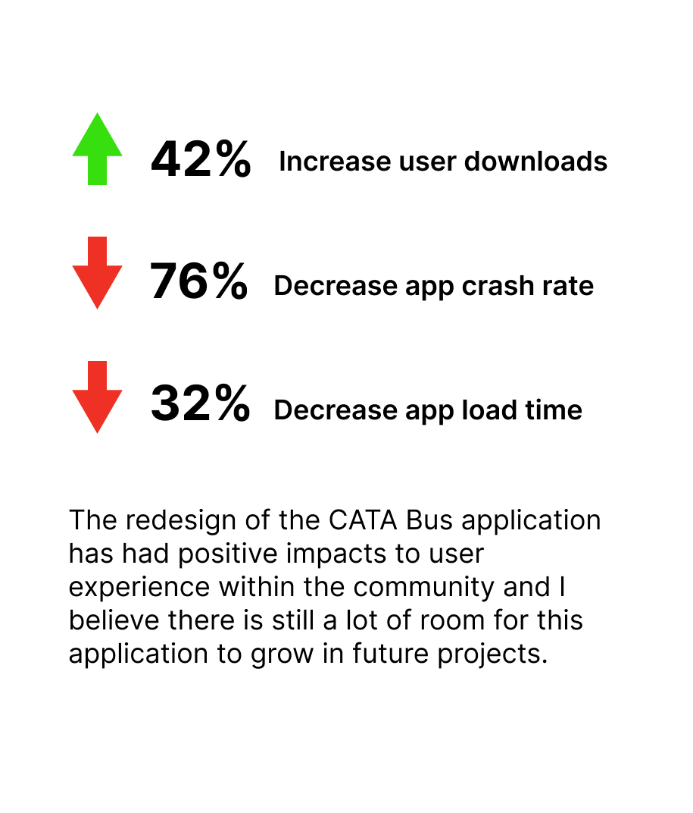
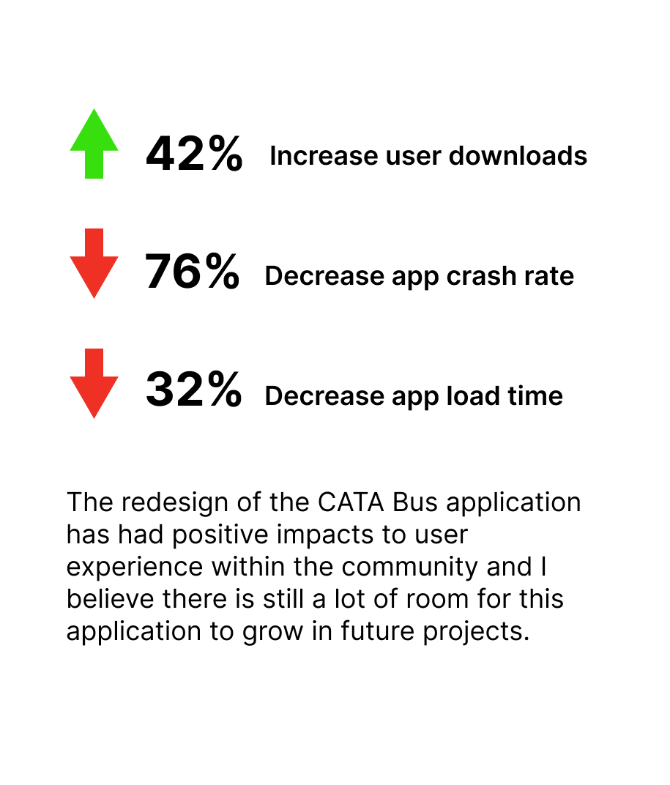

CATA Mobile application provides real-time information to bus riders.
The Challenge
Frequent application crashes, unintuitive features, and unreliable bus information caused the original CATA application a 62% drop in user downloads with a poor customer rating of 1.7/5.0 on the App Store.
Key Objective
CATA Bus app should allow users to track their bus location in real-time and provide alerts & notifications about delays, cancellations, or changes in the bus schedules, enabling users to plan their arrival time accordingly.
Solution Summary
In my role as a UX/UI Designer, I implemented a comprehensive life cycle of user experience design and testing. This involved researching user needs and data points, conducting thorough user research through personas and surveys, creating initial prototypes and wireframes, analyzing user feedback and iterating the design through multiple loops and AB testing, and ultimately designing the MVP to meet the user's needs.
After conducting user research through surveys, which yielded 83 responses, and analyzing the feedback, I utilized the UX design process holistically to create a new CATA application. This involved designing new features such as favorite bus routes, quick actions on the landing screen, and quick checks for detailed bus information, all of which were inspired by the physical bus schedule. The resulting application offers an intuitive user experience that caters to users of all digital skill levels.
The redesigned CATA application has had a significant positive impact on the user experience, resulting in a 42% increase in user downloads, a 76% reduction in app crashes, and a 32% decrease in app load time.
My Details
My Role
UX Designer, UI Designer
Tools
Note pad + pen- notes for live interviews, sketches to ideate, etc.
Adobe Creative Cloud- userflows, wireframes, mockups, prototypes.
Zoom- to carry out several user interviews for digital prototypes.
Duration
17 months
Analyze The Previous Application
The prior design exhibited a multitude of deficiencies that greatly hindered its usability and efficiency. This, in turn, resulted in a noticeable decline in downloads and motivated users to explore other application options.


Understanding The User
Upon identifying the target user groups, I conducted 20 in-depth interviews to gain a comprehensive understanding of their unique needs. Utilizing this valuable information in conjunction with the product specifications and user behaviors, I crafted an initial paper prototype that was presented during the interviews.
Of the 20 individuals interviewed, 11 were students, 3 were faculty members, and 6 were visitors. Despite their attempts to use the official CATA Bus application, a majority of participants experienced significant issues that led them to switch to competing applications.
In order to gather further insight, I conducted a comprehensive user survey wherein I provided a side-by-side comparison of my paper prototype, the current CATA Bus app, and the competitor's app. During this process, I encouraged participants to share their assumptions and impressions regarding the features of each prototype and application.
Synthesizing What Matters


Creating Something Real
Drawing upon user feedback, I crafted a digital prototype that incorporates the desired features.


MVP
Following multiple feedback sessions, design iterations, and AB testing, I finalized the designs below for the Minimum Viable Product (MVP) of the application.


Live Results
 
